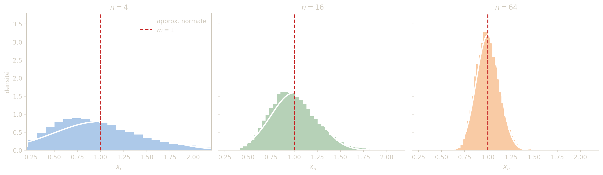

Distribution d’échantillonnage
Ce chapitre introduit la logique de l’échantillonnage aléatoire et la notion centrale de distribution d’échantillonnage d’une statistique. On précise d’abord le lien entre population, loi parente et n-échantillon i.i.d., puis on étudie les statistiques fondamentales : la moyenne empirique, la proportion empirique, la variance empirique non corrigée et la variance empirique corrigée. Le chapitre établit leurs propriétés d’espérance et de variance, introduit la notion d’erreur-type, met en évidence le biais de la variance non corrigée, puis présente les lois exactes dans le cas d’une loi parente gaussienne (loi normale et loi du khi-deux) ainsi que le rôle du théorème central limite. Enfin, il propose une méthode pratique pour analyser et interpréter des résultats d’échantillonnage en statistique inférentielle.
Dans un contexte d’ingénierie, on n’observe presque jamais toute la population :
- on mesure quelques pièces pour contrôler une production ;
- on teste quelques composants pour évaluer une fiabilité ;
- on relève quelques capteurs pour estimer une grandeur physique ;
- on inspecte un lot pour estimer un taux de défauts.
La question n’est donc pas seulement “quelle valeur a-t-on observée ?”, mais “de combien cette valeur peut-elle fluctuer d’un échantillon à l’autre ?”. La distribution d’échantillonnage répond précisément à cette question et fournit la base mathématique des intervalles de confiance, des tests et des règles de décision.
Échantillonnage
On souhaite étudier un caractère \(X\) sur une population \(P\) de taille \(N\). En pratique, on n’observe qu’une partie de la population : un échantillon de taille \(n\).
Soit \(X\) une variable de loi parente \(\mathcal{L}\). Un n-échantillon aléatoire est un n-uplet \[ (X_1,\dots,X_n) \] de variables aléatoires indépendantes et de même loi \[ X_i\sim\mathcal{L} \quad (i=1,\dots,n). \]
Les valeurs observées changent d’un échantillon à l’autre : c’est la fluctuation d’échantillonnage.
Si l’on prélève plusieurs échantillons de même taille \(n\) dans une même population, les valeurs observées \((x_1,\dots,x_n)\) diffèrent d’un tirage à l’autre. Par conséquent, toute statistique calculée sur l’échantillon (moyenne, variance, proportion…) varie elle aussi. Ce phénomène, appelé fluctuation d’échantillonnage, est incontournable : il ne traduit pas une erreur de mesure mais la variabilité inhérente au tirage aléatoire. L’objectif de la distribution d’échantillonnage est précisément de quantifier cette variabilité.
On gagne beaucoup en clarté en distinguant les objets suivants :
| Niveau | Objet | Exemple |
|---|---|---|
| Population / modèle | loi parente de \(X\) | diamètre d’une pièce, temps de réponse d’un serveur |
| Échantillon aléatoire | \((X_1,\dots,X_n)\) | les \(n\) mesures futures avant observation |
| Échantillon observé | \((x_1,\dots,x_n)\) | les \(n\) valeurs effectivement relevées |
| Statistique | \(T(X_1,\dots,X_n)\) | \(\overline{X}_n\), \(\widehat{p}_n\), \(S_n^2\) |
| Valeur observée de la statistique | \(T(x_1,\dots,x_n)\) | \(12{,}4\) mm, \(0{,}032\), \(1{,}8\) |
En inférentielle, on calcule une valeur observée, mais on raisonne avec la loi de la statistique aléatoire qui l’a produite.
- Avec remise : les tirages sont indépendants. Si \(p\) est la proportion d’individus possédant un caractère \(c\) dans la population, on pose \(X_i=1\) si l’individu \(i\) possède le caractère et \(X_i=0\) sinon. Chaque \(X_i\sim\mathcal{B}(p)\) et le nombre d’individus possédant \(c\) dans l’échantillon vaut \(\sum_{i=1}^n X_i\sim\mathcal{B}(n,p)\).
- Sans remise : les tirages ne sont plus indépendants. Le nombre d’individus possédant \(c\) suit alors une loi hypergéométrique \(\mathcal{H}(n,p,N)\), dont la loi est donnée par \[ P\!\left(\sum_{i=1}^n X_i=k\right) =\frac{\displaystyle\binom{pN}{k}\binom{(1-p)N}{n-k}}{\displaystyle\binom{N}{n}}, \qquad 0\le k\le n. \]
- Règle pratique : on peut approcher \(\mathcal{H}(n,p,N)\) par \(\mathcal{B}(n,p)\) dès que l’échantillon représente moins de 10 % de la population, c’est-à-dire \(10n\ll N\) (ou de façon équivalente \(n/N<0{,}1\)).
Dans une population, on note \(p\) la proportion d’individus ayant un caractère donné (par exemple “yeux bleus”). On interroge \(n\) personnes et on pose \[ X_i= \begin{cases} 1 & \text{si la personne i possède le caractère,}\\ 0 & \text{sinon.} \end{cases} \]
- Quelle est la loi de chaque \(X_i\) ?
- Quelle est la loi de \(\sum_{i=1}^n X_i\) dans un schéma avec remise ?
- Chaque \(X_i\) suit une loi de Bernoulli \(\mathcal{B}(p)\).
- La somme \(\sum_{i=1}^n X_i\) suit une loi binomiale \[ \mathcal{B}(n,p). \]
Distribution d’échantillonnage
Une statistique est toute fonction des variables d’échantillon : \[ T=T(X_1,\dots,X_n). \]
La distribution d’échantillonnage de \(T\) est la loi de la variable aléatoire \(T\).
Ce point de vue est fondamental : en inférentielle, on n’observe pas un seul \(T\) “fixe”, mais une réalisation d’une variable aléatoire dont la loi contrôle précision et incertitude.
Erreur-type d’une statistique
L’erreur-type (ou écart-type d’échantillonnage) d’une statistique \(T\) est \[ \mathrm{se}(T)=\sqrt{\mathrm{Var}(T)}. \]
L’erreur-type mesure la dispersion typique de la statistique d’un échantillon à l’autre. C’est l’échelle naturelle de l’incertitude statistique.
- Pour une moyenne empirique : \(\mathrm{se}(\overline{X}_n)=\sigma/\sqrt{n}\).
- Pour une proportion empirique : \(\mathrm{se}(\widehat{p}_n)=\sqrt{p(1-p)/n}\).
- Multiplier la taille d’échantillon par \(4\) divise l’erreur-type par \(2\).
Autrement dit, gagner un facteur 2 en précision demande souvent beaucoup plus de données qu’on ne l’imagine.
Un capteur de température produit des mesures indépendantes de moyenne vraie \(m\) et d’écart-type \(\sigma=0{,}8\,^\circ\)C.
- Quelle est l’erreur-type de la moyenne de \(16\) mesures ?
- Quelle taille d’échantillon faut-il pour descendre à une erreur-type de \(0{,}1\,^\circ\)C ?
On utilise \[ \mathrm{se}(\overline{X}_n)=\frac{\sigma}{\sqrt{n}}. \]
Pour \(n=16\) : \[ \mathrm{se}(\overline{X}_{16})=\frac{0{,}8}{4}=0{,}2\,^\circ\mathrm{C}. \]
On veut \[ \frac{0{,}8}{\sqrt{n}}\le 0{,}1 \qquad\Longleftrightarrow\qquad \sqrt{n}\ge 8 \qquad\Longleftrightarrow\qquad n\ge 64. \]
Il faut donc au moins 64 mesures.
Lors d’une élection, un sondage sur un échantillon de 1000 personnes attribue au candidat Durand 50,2 % des voix. Le résultat final publié est 51,1 %.
Identifier dans cet énoncé : - la population, - la variable étudiée, - la loi du caractère observé, - la statistique utilisée.
On modélise en général chaque réponse par une variable de Bernoulli (valeur 1 si vote Durand, 0 sinon). La statistique naturelle est la proportion empirique dans l’échantillon.
On peut modéliser la situation en posant \[ X_i= \begin{cases} 1 & \text{si la personne interrogée déclare voter Durand,}\\ 0 & \text{sinon.} \end{cases} \]
Alors :
- la population est l’ensemble des électeurs concernés par l’élection ;
- la variable étudiée est l’intention de vote pour Durand ;
- la loi du caractère observé est une loi de Bernoulli \(\mathcal{B}(p)\), où \(p\) désigne la vraie proportion d’électeurs favorables à Durand dans la population ;
- la statistique utilisée est la proportion empirique \(\widehat{p}_{1000}=0{,}502\) (ou, de façon équivalente, le nombre de réponses favorables parmi 1000).
Le fait que le résultat final soit \(51{,}1\,\%\) montre que la proportion observée sur l’échantillon peut différer de la proportion réelle dans la population : c’est précisément la fluctuation d’échantillonnage.
Moyenne empirique
La moyenne empirique est \[ \overline{X}_n=\frac{1}{n}\sum_{i=1}^n X_i. \]
Si la loi parente admet une moyenne \(m\) et une variance \(\sigma^2\), alors \[ E(\overline{X}_n)=m, \qquad \mathrm{Var}(\overline{X}_n)=\frac{\sigma^2}{n}. \]
- \(\overline{X}_n=\dfrac{1}{n}\sum X_i\) signifie : on additionne les \(n\) observations puis on divise par \(n\).
- \(E(\overline{X}_n)=m\) signifie : si l’on répétait l’échantillonnage un grand nombre de fois, la moyenne des moyennes observées serait la vraie moyenne \(m\).
- \(\mathrm{Var}(\overline{X}_n)=\sigma^2/n\) signifie : la moyenne empirique fluctue moins qu’une observation isolée, et cette fluctuation décroît quand la taille d’échantillon augmente.
La moyenne empirique est donc centrée sur la vraie moyenne, et sa dispersion diminue en \(1/n\).
Si \(X_i\sim\mathcal{N}(m,\sigma^2)\) (i.i.d.), alors \[ \overline{X}_n\sim\mathcal{N}\!\left(m,\frac{\sigma^2}{n}\right). \]
Les notes suivent une loi normale \(\mathcal{N}(10,25)\).
- Donner la loi de \(\overline{X}_{100}\).
- Quelle est son espérance ?
- Que devient la variance si on passe à \(n=400\) ?
- \(\overline{X}_{100}\sim\mathcal{N}(10,25/100)=\mathcal{N}(10,0{,}25)\).
- Espérance : \(10\).
- Pour \(n=400\) : variance \(25/400=0{,}0625\).
Proportion empirique
Dans de nombreux problèmes industriels, la variable d’intérêt est binaire : pièce conforme / non conforme, paquet transmis / perdu, machine en marche / à l’arrêt. La proportion empirique est alors la statistique naturelle.
Si \(X_1,\dots,X_n\) sont i.i.d. de loi \(\mathcal{B}(p)\), on pose \[ \widehat{p}_n=\frac{1}{n}\sum_{i=1}^n X_i. \]
La variable \(\widehat{p}_n\) est la proportion empirique de succès.
Si \(X_i\sim\mathcal{B}(p)\) (i.i.d.), alors \[ E(\widehat{p}_n)=p, \qquad \mathrm{Var}(\widehat{p}_n)=\frac{p(1-p)}{n}. \]
- \(\widehat{p}_n=\dfrac{1}{n}\sum X_i\) signifie : on compte le nombre de succès puis on le rapporte au nombre total d’essais.
- \(E(\widehat{p}_n)=p\) signifie : en moyenne, la fréquence observée tombe juste.
- \(\mathrm{Var}(\widehat{p}_n)=\dfrac{p(1-p)}{n}\) signifie : la fréquence fluctue d’autant moins que l’échantillon est grand.
- Le facteur \(p(1-p)\) est maximal près de \(p=0{,}5\) : un phénomène rare ou presque certain fluctue moins qu’un phénomène équilibré.
La proportion empirique est donc un estimateur sans biais de \(p\), et sa précision s’améliore encore en \(1/\sqrt{n}\).
Si \(n\) est assez grand et si \(np\ge 5\) et \(n(1-p)\ge 5\), alors \[ \frac{\widehat{p}_n-p}{\sqrt{p(1-p)/n}} \approx \mathcal{N}(0,1), \] ce qui revient à dire \[ \widehat{p}_n\approx \mathcal{N}\!\left(p,\frac{p(1-p)}{n}\right). \]
Cette écriture se lit ainsi : pour des échantillons assez grands, la proportion empirique se comporte presque comme une variable gaussienne centrée sur la vraie proportion \(p\), avec une dispersion contrôlée par \(\sqrt{p(1-p)/n}\).
Une ligne fabrique des cartes électroniques avec un taux de défauts \(p=0{,}02\). On inspecte un échantillon aléatoire de \(n=500\) cartes.
- Quelle est l’espérance de la proportion empirique \(\widehat{p}_{500}\) ?
- Quelle est sa variance ?
- Quelle est son erreur-type ?
On utilise les formules de la proportion empirique : \[ E(\widehat{p}_n)=p,\qquad \mathrm{Var}(\widehat{p}_n)=\frac{p(1-p)}{n}. \]
Espérance : \[ E(\widehat{p}_{500})=0{,}02. \]
Variance : \[ \mathrm{Var}(\widehat{p}_{500})=\frac{0{,}02\times 0{,}98}{500} =0{,}0000392. \]
Erreur-type : \[ \mathrm{se}(\widehat{p}_{500})=\sqrt{0{,}0000392}\approx 0{,}0063. \]
On s’attend donc à des fluctuations typiques d’environ 0,63 point de pourcentage autour du vrai taux de défauts.
Rôle du théorème central limite
Les lois exactes sont très utiles, mais elles n’existent pas toujours sous une forme simple. Le théorème central limite (TCL) fournit alors une approximation universelle pour la moyenne empirique.
Si \(X_1,\dots,X_n\) sont i.i.d., de moyenne \(m\) et de variance finie \(\sigma^2\), alors \[ Z_n=\frac{\overline{X}_n-m}{\sigma/\sqrt{n}} \xrightarrow{\mathcal{L}} \mathcal{N}(0,1). \]
Pour \(n\) grand, on peut donc approcher \[ \overline{X}_n\approx \mathcal{N}\!\left(m,\frac{\sigma^2}{n}\right), \] même si la loi parente n’est pas gaussienne.
Le TCL dit essentiellement ceci :
- on recentre la moyenne empirique en retranchant la vraie moyenne \(m\) ;
- on la met à l’échelle en divisant par son erreur-type \(\sigma/\sqrt{n}\) ;
- la quantité obtenue se comporte alors comme une variable normale centrée réduite.
Autrement dit, beaucoup de moyennes empiriques finissent par avoir une forme gaussienne, même lorsque les données d’origine ne sont pas gaussiennes.
- Le TCL justifie les approximations normales en métrologie, en fiabilité et en contrôle qualité.
- Plus la loi parente est asymétrique ou très dispersée, plus il faut un \(n\) grand pour obtenir une bonne approximation.
- Si la loi a des queues très lourdes ou si des outliers dominent les données, il faut rester prudent : l’approximation normale peut être médiocre.
La figure suivante illustre une idée essentielle : même si la loi parente n’est pas gaussienne, la distribution de la moyenne empirique tend à devenir plus régulière et plus concentrée quand \(n\) augmente.
On simule ici des échantillons issus d’une loi exponentielle de moyenne \(1\) (donc asymétrique), puis on compare les histogrammes de \(\overline{X}_n\) pour \(n=4\), \(16\) et \(64\) à la densité normale prédite par le TCL : \[ \mathcal{N}\!\left(1,\frac{1}{n}\right). \]

La lecture de la figure est importante :
- pour \(n=4\), l’asymétrie de la loi parente reste visible ;
- pour \(n=16\), la distribution d’échantillonnage est déjà plus symétrique ;
- pour \(n=64\), la concentration autour de la vraie moyenne est très nette.
On voit ainsi à la fois les deux messages du TCL :
- la moyenne empirique devient plus stable quand \(n\) augmente ;
- sa loi devient approximativement normale sous des hypothèses très générales.
Le temps de cycle d’une machine a une moyenne \(m=52\) s et un écart-type \(\sigma=6\) s. On observe des échantillons de \(n=36\) cycles.
- Donner l’approximation du TCL pour la loi de \(\overline{X}_{36}\).
- Évaluer approximativement \[P(\overline{X}_{36}>53{,}5).\]
Par le TCL, \[ \overline{X}_{36}\approx \mathcal{N}\!\left(52,\frac{6^2}{36}\right) =\mathcal{N}(52,1). \]
Donc \[ P(\overline{X}_{36}>53{,}5)\approx P(Z>1{,}5)\approx 0{,}067. \]
On obtient une probabilité d’environ 6,7 %.
Six personnes (trois hommes et trois femmes) montent dans un ascenseur de charge maximale 450 kg.
- poids d’un homme : \(\mathcal{N}(77,144)\),
- poids d’une femme : \(\mathcal{N}(63,100)\),
- indépendance supposée.
- Déterminer les lois du poids total \(T\) et du poids moyen \(\overline{T}\).
- Calculer \(P(T>450)\).
- Dans un scénario pessimiste, chaque personne suit \(\mathcal{N}(77,144)\). Déterminer la charge maximale réelle \(M\) pour que \[P(T>M)\le 0{,}005.\] (Arrondir aux 10 kg supérieurs.)
- Somme de normales indépendantes : moyenne = somme des moyennes, variance = somme des variances.
- Question 3 : chercher un quantile haut de la loi normale de \(T\).
1. Lois de \(T\) et de \(\overline{T}\).
Le poids total est \[ T=H_1+H_2+H_3+F_1+F_2+F_3 \] où les poids des hommes suivent \(\mathcal{N}(77,144)\) et ceux des femmes \(\mathcal{N}(63,100)\).
Par somme de lois normales indépendantes : \[ E(T)=3\times 77+3\times 63=420, \] \[ \mathrm{Var}(T)=3\times 144+3\times 100=732. \]
Donc \[ T\sim\mathcal{N}(420,732). \]
Le poids moyen par personne vaut \[ \overline{T}=\frac{T}{6}, \] donc \[ \overline{T}\sim\mathcal{N}\!\left(70,\frac{732}{36}\right) =\mathcal{N}\!\left(70,\frac{61}{3}\right). \]
2. Probabilité de dépasser 450 kg.
On standardise : \[ P(T>450)=P\!\left(Z>\frac{450-420}{\sqrt{732}}\right) =P(Z>1{,}11). \]
D’où \[ P(T>450)\approx 0{,}134. \]
Il y a donc environ 13,4 % de chances de dépasser la charge maximale.
3. Scénario pessimiste.
Si les 6 personnes suivent toutes \(\mathcal{N}(77,144)\), alors \[ T\sim\mathcal{N}(6\times 77,6\times 144)=\mathcal{N}(462,864). \]
On cherche \(M\) tel que \[ P(T>M)\le 0{,}005 \qquad\Longleftrightarrow\qquad P\!\left(Z\le \frac{M-462}{\sqrt{864}}\right)\ge 0{,}995. \]
Le quantile d’ordre \(0{,}995\) de la loi normale centrée réduite vaut environ \(2{,}576\), donc \[ M=462+2{,}576\sqrt{864}\approx 537{,}7. \]
En arrondissant aux 10 kg supérieurs, on obtient \[ \boxed{M=540\ \text{kg}.} \]
Les bouteilles de bière ont une contenance moyenne de 300 ml avec écart-type 5 ml. Elles sont vendues par packs de 6.
- Déterminer l’écart-type de la contenance moyenne d’un pack.
- En supposant la normalité, quelle valeur la contenance moyenne d’un pack a-t-elle 1,7 % de chances de dépasser ? (Arrondir à 0,1 ml.)
Si \(\overline{X}_6\) est la moyenne du pack : \[\sigma_{\overline{X}_6}=\frac{\sigma}{\sqrt{6}}.\] Puis utiliser un quantile normal tel que \(P(\overline{X}_6>c)=0{,}017\).
On note \(\overline{X}_6\) la contenance moyenne d’un pack de 6 bouteilles.
1. Écart-type de la moyenne d’un pack.
On sait que l’écart-type individuel vaut \(\sigma=5\) ml. Donc \[ \sigma_{\overline{X}_6}=\frac{5}{\sqrt{6}}\approx 2{,}04\ \text{ml}. \]
2. Seuil dépassé avec probabilité \(1{,}7\,\%\).
Sous l’hypothèse de normalité, \[ \overline{X}_6\sim\mathcal{N}\!\left(300,\frac{25}{6}\right). \]
On cherche \(c\) tel que \[ P(\overline{X}_6>c)=0{,}017. \]
Cela signifie que \(c\) est le quantile d’ordre \(0{,}983\) : \[ c=300+z_{0{,}983}\frac{5}{\sqrt{6}}. \]
Avec \(z_{0{,}983}\approx 2{,}12\), on obtient \[ c\approx 300+2{,}12\times 2{,}04\approx 304{,}3. \]
Ainsi, la contenance moyenne d’un pack n’a que \(1{,}7\,\%\) de chances de dépasser environ \[ \boxed{304{,}3\ \text{ml}.} \]
Variance empirique et variance corrigée
Variance empirique non corrigée
\[ S_n'^2=\frac{1}{n}\sum_{i=1}^n (X_i-\overline{X}_n)^2 =\frac{1}{n}\sum_{i=1}^n X_i^2-(\overline{X}_n)^2. \]
Si la loi parente a variance \(\sigma^2\), alors \[ E(S_n'^2)=\frac{n-1}{n}\sigma^2. \]
Cette formule signifie que la variance empirique non corrigée est un peu trop petite en moyenne : elle oublie qu’on a déjà utilisé l’échantillon pour estimer sa propre moyenne.
Donc \(S_n'^2\) sous-estime en moyenne \(\sigma^2\) : c’est un estimateur biaisé.
Variance empirique corrigée
\[ S_n^2=\frac{n}{n-1}S_n'^2 =\frac{1}{n-1}\sum_{i=1}^n (X_i-\overline{X}_n)^2. \]
\[ E(S_n^2)=\sigma^2. \]
La variance empirique corrigée est sans biais.
Passer de \(S_n'^2\) à \(S_n^2\) revient à compenser la sous-estimation systématique de la variance. Le facteur \(\dfrac{n}{n-1}\) est une petite correction qui devient presque invisible pour \(n\) grand, mais qui est importante pour les petits échantillons.
Cas gaussien
Si \(X_i\sim\mathcal{N}(m,\sigma^2)\) (i.i.d.), alors :
\[ \frac{1}{\sigma^2}\sum_{i=1}^n (X_i-m)^2\sim\chi_n^2, \] \[ \frac{n}{\sigma^2}S_n'^2 =\frac{n-1}{\sigma^2}S_n^2 =\frac{1}{\sigma^2}\sum_{i=1}^n (X_i-\overline{X}_n)^2 \sim\chi_{n-1}^2. \]
Ces formules disent qu’en loi normale, une somme de carrés d’écarts standardisés suit une loi du \(\chi^2\).
- Quand on connaît la vraie moyenne \(m\), on additionne les écarts à \(m\) : on garde alors \(n\) degrés de liberté.
- Quand on remplace \(m\) par \(\overline{X}_n\), on “consomme” une information pour estimer la moyenne : il ne reste plus que \(n-1\) degrés de liberté.
La perte d’un degré de liberté vient de la contrainte introduite par l’estimation de la moyenne avec \(\overline{X}_n\).
On sait que \(\sigma^2=25\) et \(n=100\).
- Calculer \(E(S_{100}'^2)\).
- Calculer \(E(S_{100}^2)\).
\[ E(S_{100}'^2)=\frac{99}{100}\times 25=24{,}75, \] \[ E(S_{100}^2)=25. \]
Soit \(n\ge 1\) et \((X_1,\dots,X_n)\) un \(n\)-échantillon d’une loi parente \(\mathcal{N}(m,\sigma^2)\).
On considère : \[\overline{X}_n=\frac1n\sum_{i=1}^n X_i, \qquad V_n=\frac1n\sum_{i=1}^n (X_i-m)^2,\] \[S_n'^2=\frac1n\sum_{i=1}^n (X_i-\overline{X}_n)^2, \qquad S_n^2=\frac1{n-1}\sum_{i=1}^n (X_i-\overline{X}_n)^2.\]
- Nommer chacune de ces variables.
- Donner les lois de : \[\overline{X}_n,\qquad \frac{n}{\sigma^2}V_n, \qquad \frac{n}{\sigma^2}S_n'^2, \qquad \frac{n-1}{\sigma^2}S_n^2.\]
- \(\overline{X}_n\) est la moyenne empirique.
- \(S_n'^2\) est la variance empirique non corrigée.
- \(S_n^2\) est la variance empirique corrigée.
- En loi normale, les sommes de carrés standardisées suivent une loi \(\chi^2\).
1. Nom des variables.
- \(\overline{X}_n\) est la moyenne empirique ;
- \(V_n=\dfrac1n\sum_{i=1}^n (X_i-m)^2\) est la moyenne des carrés des écarts à la vraie moyenne \(m\) ;
- \(S_n'^2\) est la variance empirique non corrigée ;
- \(S_n^2\) est la variance empirique corrigée.
2. Lois.
Comme l’échantillon est gaussien :
\[ \overline{X}_n\sim\mathcal{N}\!\left(m,\frac{\sigma^2}{n}\right). \]
De plus, \[ \frac{n}{\sigma^2}V_n =\frac{1}{\sigma^2}\sum_{i=1}^n (X_i-m)^2 \sim \chi_n^2. \]
Pour la variance non corrigée, \[ \frac{n}{\sigma^2}S_n'^2 =\frac{1}{\sigma^2}\sum_{i=1}^n (X_i-\overline{X}_n)^2 \sim \chi_{n-1}^2. \]
Enfin, \[ \frac{n-1}{\sigma^2}S_n^2\sim \chi_{n-1}^2. \]
Les deux dernières lois sont cohérentes puisque \[ \frac{n}{\sigma^2}S_n'^2=\frac{n-1}{\sigma^2}S_n^2. \]
Lors d’un examen, les notes suivent la loi \(\mathcal{N}(10,25)\).
Pour \(n=25\), calculer \[P(9{,}5\le \overline{X}_n\le 11).\] Que devient cette probabilité pour \(n=100\) ? Commenter.
Pour \(n=25\), évaluer \[P(S_n'^2>36{,}42)\] et résoudre \[P(S_n^2>a)=0{,}05.\]
- \(\overline{X}_n\sim \mathcal{N}\!\left(10,\frac{25}{n}\right)\).
- Pour la question 2, ramener à des quantiles de loi \(\chi^2\) via : \[\frac{n}{\sigma^2}S_n'^2\sim\chi_{n-1}^2, \qquad \frac{n-1}{\sigma^2}S_n^2\sim\chi_{n-1}^2.\]
On a toujours \(\sigma^2=25\), donc \(\sigma=5\).
1. Probabilité sur la moyenne empirique.
Pour \(n=25\) : \[ \overline{X}_{25}\sim\mathcal{N}\!\left(10,\frac{25}{25}\right)=\mathcal{N}(10,1). \]
Ainsi, \[ P(9{,}5\le \overline{X}_{25}\le 11) =P\!\left(-0{,}5\le Z\le 1\right) =\Phi(1)-\Phi(-0{,}5). \]
Numériquement, \[ P(9{,}5\le \overline{X}_{25}\le 11)\approx 0{,}5328. \]
Pour \(n=100\) : \[ \overline{X}_{100}\sim\mathcal{N}\!\left(10,\frac{25}{100}\right)=\mathcal{N}(10,0{,}25), \] donc l’écart-type vaut \(0{,}5\).
On obtient \[ P(9{,}5\le \overline{X}_{100}\le 11) =P(-1\le Z\le 2) =\Phi(2)-\Phi(-1) \approx 0{,}8186. \]
La probabilité augmente nettement : quand \(n\) grandit, la moyenne empirique est plus concentrée autour de la vraie moyenne \(10\).
2. Probabilités sur les variances empiriques.
Pour \(n=25\), \[ \frac{n}{\sigma^2}S_n'^2=\frac{25}{25}S_n'^2=S_n'^2\sim\chi_{24}^2. \]
Donc \[ P(S_n'^2>36{,}42)=P(\chi_{24}^2>36{,}42)\approx 0{,}05. \]
Ensuite, \[ \frac{n-1}{\sigma^2}S_n^2=\frac{24}{25}S_n^2\sim\chi_{24}^2. \]
On cherche \(a\) tel que \[ P(S_n^2>a)=0{,}05. \]
Cela revient à imposer \[ P\!\left(\chi_{24}^2>\frac{24a}{25}\right)=0{,}05. \]
Le quantile à 95 % de \(\chi_{24}^2\) vaut environ \(36{,}42\), donc \[ \frac{24a}{25}=36{,}42 \qquad\Longrightarrow\qquad a=\frac{25}{24}\times 36{,}42\approx 37{,}93. \]
Ainsi, \[ \boxed{a\approx 37{,}9.} \]
Choisir la bonne loi d’échantillonnage
Avant tout calcul, il faut identifier la statistique observée et les hypothèses du modèle. Le tableau suivant résume les cas à connaître.
| Statistique | Conditions principales | Loi exacte / approximation utile |
|---|---|---|
| \(\overline{X}_n\) | loi parente gaussienne | \(\mathcal{N}(m,\sigma^2/n)\) |
| \(\overline{X}_n\) | i.i.d., variance finie, \(n\) grand | approximation TCL : \(\mathcal{N}(m,\sigma^2/n)\) |
| \(\widehat{p}_n\) | Bernoulli, \(np\ge 5\), \(n(1-p)\ge 5\) | approximation normale |
| \(S_n'^2\) ou \(S_n^2\) | loi parente gaussienne | loi du \(\chi^2\) après standardisation |
Cette étape de choix est essentielle : la bonne formule ne dépend pas seulement de la statistique, mais aussi du modèle et de la taille d’échantillon.
Lecture inférentielle
L’intérêt de ces résultats est direct :
- \(\overline{X}_n\) sert à estimer \(m\) (précision améliorée si \(n\) augmente),
- \(S_n^2\) sert à estimer \(\sigma^2\) sans biais,
- les lois normales et khi-deux permettent de construire des intervalles de confiance et des tests.
- Vérifier le modèle d’échantillonnage (i.i.d., taille, contexte).
- Identifier la statistique cible (\(\overline{X}_n\), \(S_n'^2\), \(S_n^2\), proportion…).
- Utiliser sa distribution d’échantillonnage.
- Quantifier l’incertitude (variance, quantiles, probabilités).
- Interpréter dans le contexte métier (risque, précision, décision).
Cette logique constitue le passage clé entre statistique descriptive et statistique inférentielle.
Exercice de synthèse
On considère un lot de billets : 40 billets de 50 euros et 60 billets de 20 euros. On prélève des échantillons de 3 billets avec remise.
- Calculer la moyenne et la variance de la population.
- Lister tous les échantillons-types de taille 3 (en distinguant les compositions) et calculer les moyennes correspondantes.
- Retrouver les résultats précédents avec les propriétés de la moyenne empirique.
- Calculer la moyenne des variances empiriques non corrigées obtenues.
- Retrouver ce résultat via les propriétés de la variance empirique.
- Déterminer \(E(S_3^2)\) (variance empirique corrigée) à l’aide du cours.
1. Moyenne et variance de la population.
La variable \(X\) (valeur d’un billet tiré au hasard) prend les valeurs \(50\) et \(20\) avec les probabilités \[ P(X=50)=\frac{40}{100}=0{,}4,\qquad P(X=20)=\frac{60}{100}=0{,}6. \] On calcule : \[ m=E(X)=50\times 0{,}4+20\times 0{,}6=20+12=32, \] \[ E(X^2)=50^2\times 0{,}4+20^2\times 0{,}6=1000+240=1240, \] \[ \sigma^2=\mathrm{Var}(X)=E(X^2)-[E(X)]^2=1240-1024=216. \]
2. Échantillons de taille 3 (avec remise) — moyennes et probabilités.
On distingue les compositions selon le nombre \(k\) de billets de 50 € (les échantillons de même composition ont la même probabilité, donnée par la loi binomiale) :
| \(k\) (nb de 50 €) | Composition type | Probabilité | \(\overline{x}\) |
|---|---|---|---|
| 3 | (50, 50, 50) | \(\binom{3}{3}(0{,}4)^3(0{,}6)^0=0{,}064\) | 50 |
| 2 | (50, 50, 20) | \(\binom{3}{2}(0{,}4)^2(0{,}6)^1=0{,}288\) | 40 |
| 1 | (50, 20, 20) | \(\binom{3}{1}(0{,}4)^1(0{,}6)^2=0{,}432\) | 30 |
| 0 | (20, 20, 20) | \(\binom{3}{0}(0{,}4)^0(0{,}6)^3=0{,}216\) | 20 |
Moyenne des moyennes : \[ E(\overline{X}_3)=50\times 0{,}064+40\times 0{,}288+30\times 0{,}432+20\times 0{,}216=32=m.\;\checkmark \]
Variance des moyennes : \[ E(\overline{X}_3^2)=2500\times 0{,}064+1600\times 0{,}288+900\times 0{,}432+400\times 0{,}216=1096, \] \[ \mathrm{Var}(\overline{X}_3)=1096-32^2=72. \]
3. Vérification par les propriétés de la moyenne empirique.
\[ E(\overline{X}_3)=m=32,\qquad \mathrm{Var}(\overline{X}_3)=\frac{\sigma^2}{n}=\frac{216}{3}=72.\;\checkmark \]
4. Moyenne des variances empiriques non corrigées.
Pour chaque type d’échantillon, \(S_3'^2=\frac{1}{3}\sum_{i=1}^3(X_i-\overline{X}_3)^2\) :
| Composition type | \(\overline{x}\) | \(S'^2\) |
|---|---|---|
| (50, 50, 50) | 50 | 0 |
| (50, 50, 20) | 40 | \(\frac{1}{3}(100+100+400)=200\) |
| (50, 20, 20) | 30 | \(\frac{1}{3}(400+100+100)=200\) |
| (20, 20, 20) | 20 | 0 |
\[ E(S_3'^2)=0\times 0{,}064+200\times 0{,}288+200\times 0{,}432+0\times 0{,}216=144. \]
5. Vérification par les propriétés de la variance empirique.
\[ E(S_3'^2)=\frac{n-1}{n}\,\sigma^2=\frac{2}{3}\times 216=144.\;\checkmark \]
6. Variance empirique corrigée.
\[ E(S_3^2)=\sigma^2=216. \]
On peut aussi vérifier directement : \(S_3^2=\frac{n}{n-1}S_3'^2=\frac{3}{2}S_3'^2\), donc les valeurs prises sont \(0\), \(300\) et \(300\), et \[ E(S_3^2)=0\times 0{,}064+300\times 0{,}288+300\times 0{,}432+0\times 0{,}216=216=\sigma^2.\;\checkmark \]